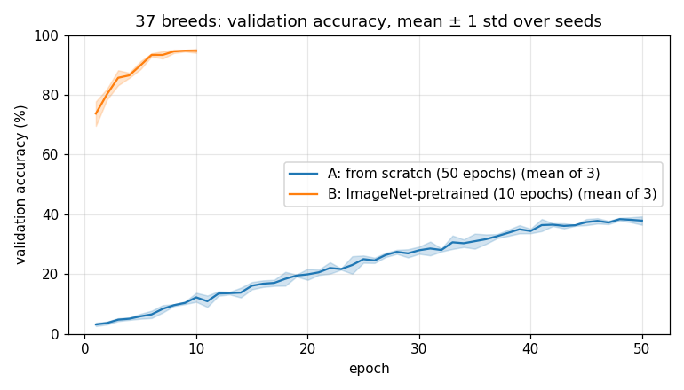
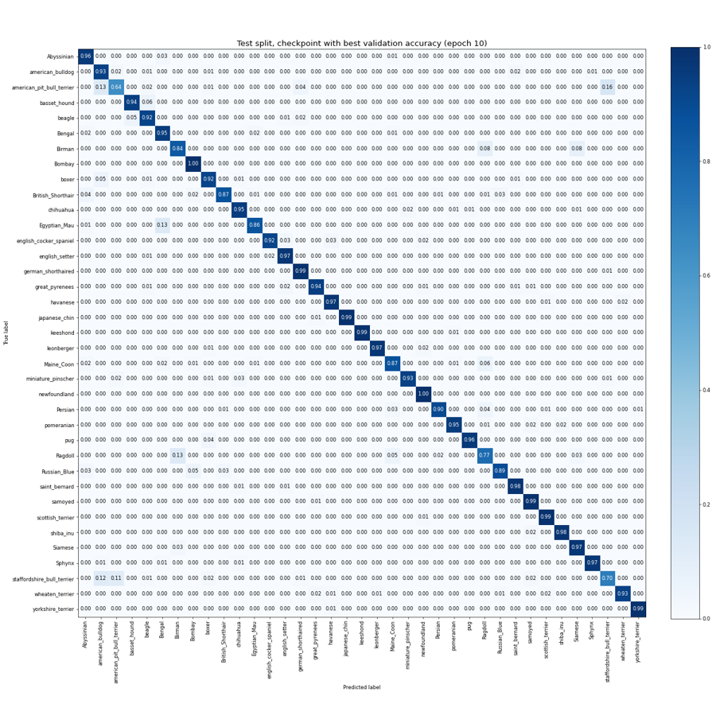
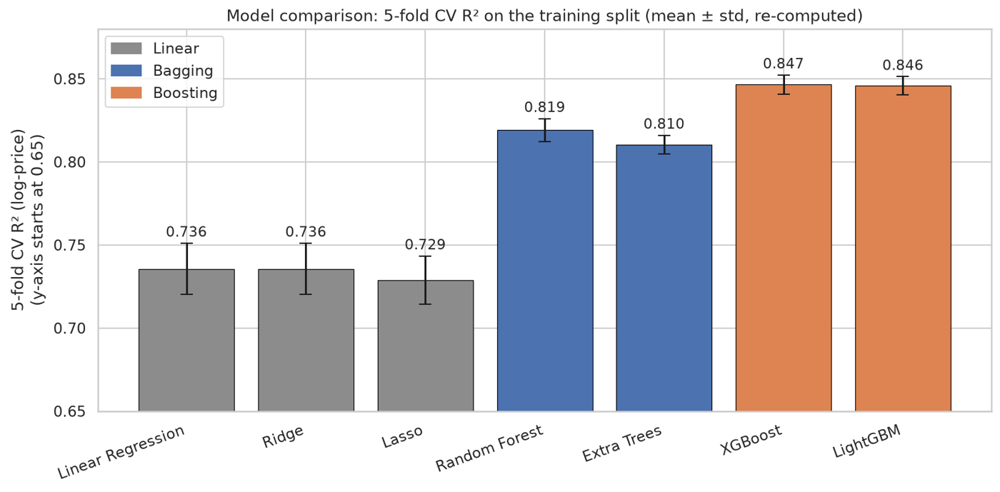
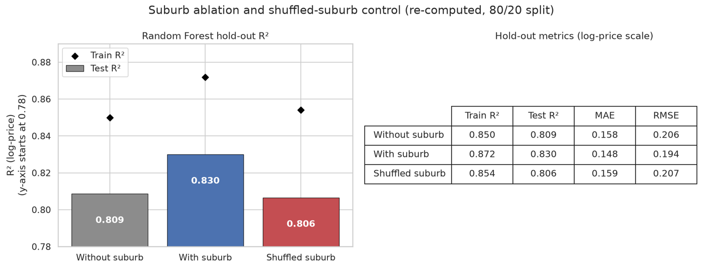
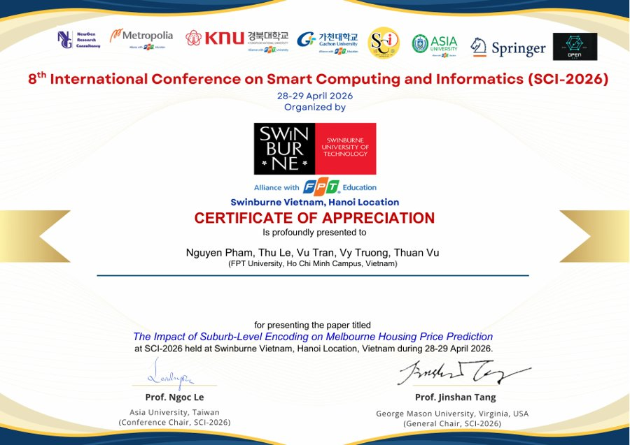

AI undergraduate · Machine Learning · Deep Learning · Computer Vision
FPT University, Ho Chi Minh City (Bachelor of AI, expected 05/2028). I build models from scratch to understand how they work, and I enjoy learning in international, collaborative teams.
ResNet-50 built manually with torch.nn to study what happens when a large network is trained on little data.
| Setup | Epochs | Test accuracy (mean ± std, 3 seeds) |
|---|---|---|
| From scratch, 37 breeds | 50 | 32.0 ± 1.1% |
| ImageNet-pretrained, fine-tuned (layer4 + new head), 37 breeds | 10 | 92.4 ± 0.3% |
| ImageNet-pretrained, fine-tuned, cat vs dog | 10 | 99.7 ± 0.1% |


Highlights
torchvision.models.Dataset that parses the official annotation files and supports 37-breed or cat-vs-dog labels.config.json, logs, TensorBoard, resumable checkpoints and a uv-locked environment.Takeaway: with only ~3.7k images, training ResNet-50 from scratch on this dataset does not work well (train accuracy 73% vs. 32% test), while a pretrained backbone reaches ~92% in 10 epochs. This is a conclusion for this setup, not a general rule.
Seven regression models compared with 5-fold cross-validation on log-price, plus an ablation of suburb-level target encoding with a shuffled-suburb leakage control and SHAP interpretation. XGBoost and LightGBM reached R² = 0.843; suburb encoding raised Random Forest test R² from 0.815 to 0.835 (paper values).


Accepted manuscript (PDF) · Presentation certificate (PDF) · Code

Reviewed and presented research papers in the group.
Email: nguyentvvn12@gmail.com · LinkedIn · GitHub · Ho Chi Minh City, Vietnam